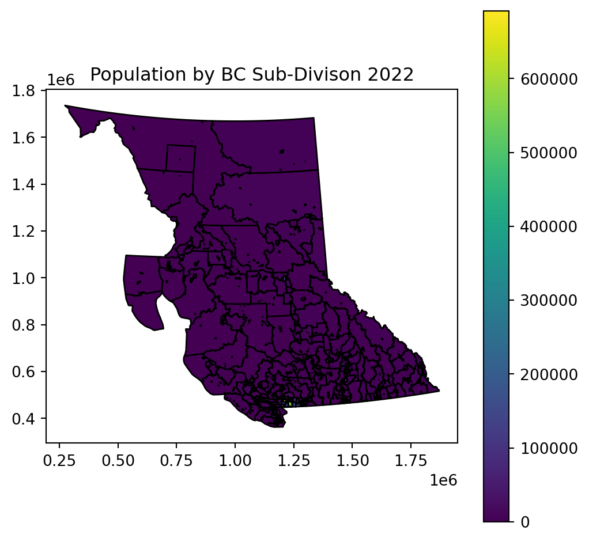

# Packages for handling files
import os
import zipfile
import shutil
# Packages for reading and plotting data
import pandas as pd
import geopandas as gpd
import matplotlib.pyplot as pltDoing GIS with Python
Start a Python Project
Import the packages needed
Import the point data from github
PID_Metadata = pd.read_csv('https://raw.githubusercontent.com/Police-Involved-Deaths-CA/Data/main/MostRecentUpdate/PID_locations_Metadata.csv')
print('Metadata')
print(PID_Metadata)
PID_locations = pd.read_csv('https://raw.githubusercontent.com/Police-Involved-Deaths-CA/Data/main/MostRecentUpdate/PID_locations.csv')
print('\nData Preview')
print(PID_locations.head())
PID_locations.to_csv('Data/temp_files/PID_locations.csv')Metadata
Unnamed: 0 Key \
0 0 Most Recent Update
1 1 Primary Data Sources
2 2 Notes:
3 3 Created by
4 4 Other Info
Values
0 2023-02-12
1 CBC Deadly Force 2018: https://newsinteractive...
2 These point locations have been geocoded using...
3 June Skeeter
4 Police_Killings_Locations contains only locati...
Data Preview
date INDEX id_victim first_name last_name middle_name age gender \
0 2000-01-05 235 235_KCC Paul Murdock NaN 25.0 NaN
1 2000-01-19 236 236_KCC Lloyd Dustyhorn NaN 53.0 Male
2 2000-01-29 237 237_KCC Rodney Naitus NaN 25.0 Male
3 2000-01-30 238 0413_V1 Stuart Mitchell NaN 49.0 Male
4 2000-02-03 239 239_KCC Lawrence Wegner NaN 30.0 Male
race ethnic_ancestry ... ds_rank Type GC \
0 Not Specified Not Specified ... NaN Police Involved Death True
1 Indigenous Not Specified ... NaN Police Killing True
2 Indigenous Not Specified ... NaN Police Killing True
3 Not Specified Not Specified ... NaN Police Killing True
4 Indigenous Not Specified ... NaN Police Killing True
GC_City_Only latitude longitude geocoding_attempt \
0 True 43.653482 -79.383935 Toronto ON
1 True 52.131802 -106.660767 Saskatoon SK
2 True 52.131802 -106.660767 Saskatoon SK
3 False 43.658858 -79.365514 Winchester & Parliament Toronto ON
4 True 52.131802 -106.660767 Saskatoon SK
geocoding_return geocoding_notes \
0 Toronto, Ontario, Canada Passed
1 Saskatoon, Saskatchewan, Canada Passed
2 Saskatoon, Saskatchewan, Canada Passed
3 Parliament Street, Toronto, Ontario M5A 2Z6, C... Passed
4 Saskatoon, Saskatchewan, Canada Passed
geocode_city
0 Toronto
1 Saskatoon
2 Saskatoon
3 Toronto
4 Saskatoon
[5 rows x 47 columns]Import the Census Data
Extract a .zipfile of census data downloaded from simply analytics
- Read the metadata
BC_Census_Data = 'SimplyAnalytics_Shapefiles_2023-02-02_23_07_59_7fa10dab487cee919a8d7e30ddf85ff3'
with zipfile.ZipFile('Data/'+BC_Census_Data+'.zip','r') as BCD:
print('.zipfile contains:')
print (BCD.namelist())
BCD.extractall('Data/temp_files/')
print('\n Varible Names:')
with open('Data/temp_files/variable_names.txt') as var_name:
print(var_name.read()).zipfile contains:
['SimplyAnalytics_Shapefiles_2023-02-02_23_07_59_7fa10dab487cee919a8d7e30ddf85ff3.dbf', 'SimplyAnalytics_Shapefiles_2023-02-02_23_07_59_7fa10dab487cee919a8d7e30ddf85ff3.prj', 'SimplyAnalytics_Shapefiles_2023-02-02_23_07_59_7fa10dab487cee919a8d7e30ddf85ff3.shx', 'SimplyAnalytics_Shapefiles_2023-02-02_23_07_59_7fa10dab487cee919a8d7e30ddf85ff3.shp', 'variable_names.txt']
Varible Names:
VALUE0 # Household Population by Aboriginal Identity | Household Population For Aboriginal Identity | Aboriginal Identity, 2022
VALUE1 # Basics | Total Population, 2022
VALUE2 # Household Population by Visible Minority Status | Household Population For Visible Minority | Visible Minority Total, 2022
Read the Shapefile
- Rename the columns
- Change the projection
- Calculate the new columns
- Plot a map
# Read Data
BC_subDivs = gpd.read_file('Data/temp_files/'+BC_Census_Data+'.shp')
# Rename Columns
BC_subDivs = BC_subDivs.rename(columns = {
'VALUE0':'Pop_Indigenous',
'VALUE1':'Pop_Total',
'VALUE2':'Pop_Visible_Minority'
})
# Project to BC Albers
BC_subDivs = BC_subDivs.to_crs(3005)
# Calculate White and Non-White Population Totals
BC_subDivs['Pop_NonWhite'] = BC_subDivs[['Pop_Indigenous','Pop_Visible_Minority']].sum(axis=1)
BC_subDivs['Pop_White'] = BC_subDivs['Pop_Total'] - BC_subDivs['Pop_NonWhite']
# Make a Map
fig,ax=plt.subplots(figsize=(6,6))
BC_subDivs.plot(column='Pop_Total',ax=ax,edgecolor='k',legend=True)
ax.set_title('Population by BC Sub-Divison 2022')Text(0.5, 1.0, 'Population by BC Sub-Divison 2022')
Saving Data
Lets save the data and also create a .zip file so the data can be downloaded more easily.
# Shapefile is a more complex format often used in desktop GIS. We're saving to a temp folder because we will then zip the data for easier download
BC_subDivs.to_file('Data/temp_files/BC_subDivs_2022.shp')
# Save the .shp to a .zip for easier download
filepath = 'Data/Workshop_Data.zip'
# Delete old .zip file *if it exists*
try:
os.unlink(filepath)
except:
pass
with zipfile.ZipFile(filepath, 'a') as zipf:
source_path = 'Data/temp_files/'
source_name = 'BC_subDivs_2022'
destination_name = 'BC_subDivs_2022'
# Add the BC_subDivs_2022.shp
for tag in ['.shp','.dbf','.prj','.shx']:
zipf.write(source_path+source_name+tag, destination_name+tag)
# Add the deaths data as well
source_path = 'Data/PID_locations.csv'
destination = 'PID_locations.csv'
zipf.write(source_path, destination)
# Delete data in temp_files
for root, dirs, files in os.walk('Data/temp_files'):
for f in files:
if f != '.gitignore':
os.unlink(os.path.join(root, f))C:\Users\User\AppData\Local\Temp\ipykernel_22252\1093180775.py:2: UserWarning: Column names longer than 10 characters will be truncated when saved to ESRI Shapefile.
BC_subDivs.to_file('Data/temp_files/BC_subDivs_2022.shp')